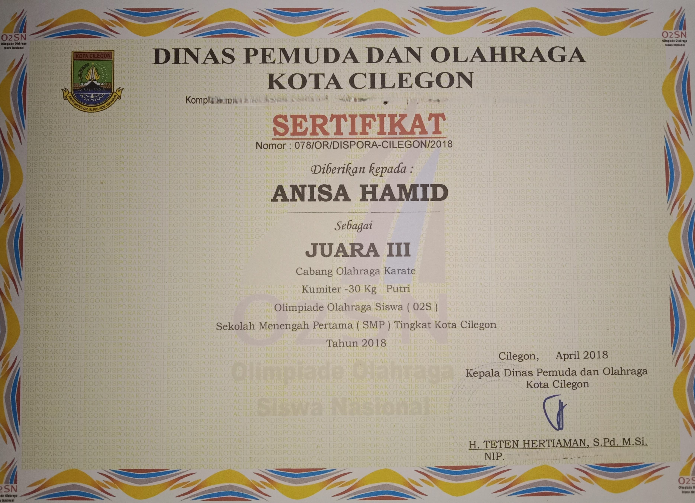
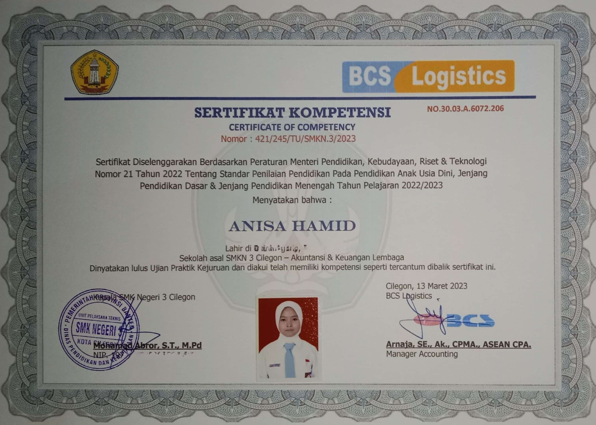
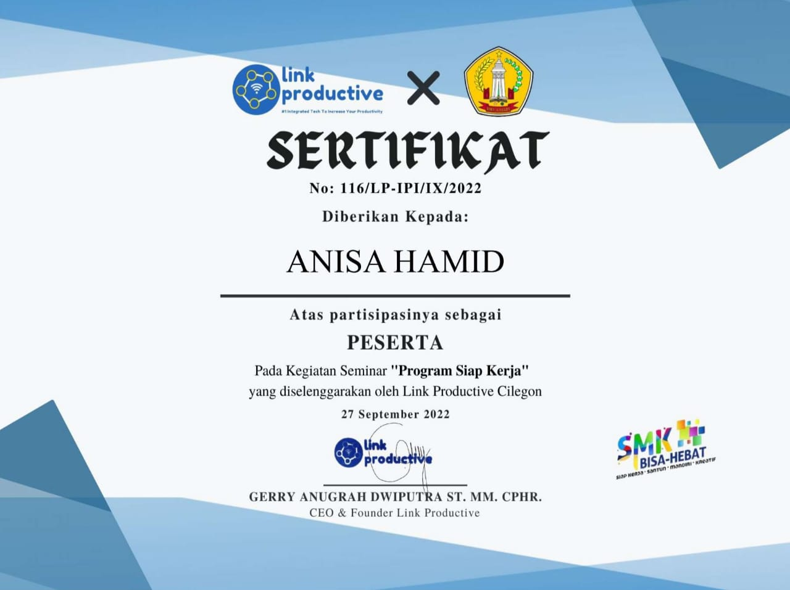

|
 |
|
| Peserta Lomba UNNIC oleh UNIBI (25 Mei 2022) |
Juara 1 Lomba Accounting Challenge oleh UNSERA (22 November 2022) |
Siswa terbaik Bidang Akademik (08 Mei 2023) |
|  |  |
 |
| Juara 3 karate Kumiter -30kg Putri O2SN SMP Tingkat Kota Cilegon (12 April 2018) | Peserta Terbaik Putri kegiatan MORIEST, AMT dan LKM di STTIKOM Insna Unggul (27 September 2023) | Peserta MORIEST di STTIKOM Insna Unggul (23 September 2023) |
 |
 |
|
| Peserta AMT di STTIKOM Insna Unggul (26 September 2023) | Peserta LKM di STTIKOM Insna Unggul (28 September 2023) | Magang Kerja di PT. KSOP Kelas I Banten (23 Februari 2023) |
 |
 |
|
| Siswa Berprestasi Bidang Akademik (04 Juli 2022) |
Peserta Webinar "Membuat Laporan Keuangan dengan mudah di EXcel" Oleh Kelas Work (13 Februari 2023) |
Peserta Table Manner Course oleh SMKN 3 Cilegon (17 Februari 2021) |
|  |  |  |
| Peserta Ujian Praktik Kejuruan oleh BCS Logistics (13 Maret 2023) |
Peserta Seminar "Program Siap Kerja" oleh Link Productive (27 September 2020) |
Peserta E-Learning K3 oleh International Labour Organization (20 Juli 2022) |